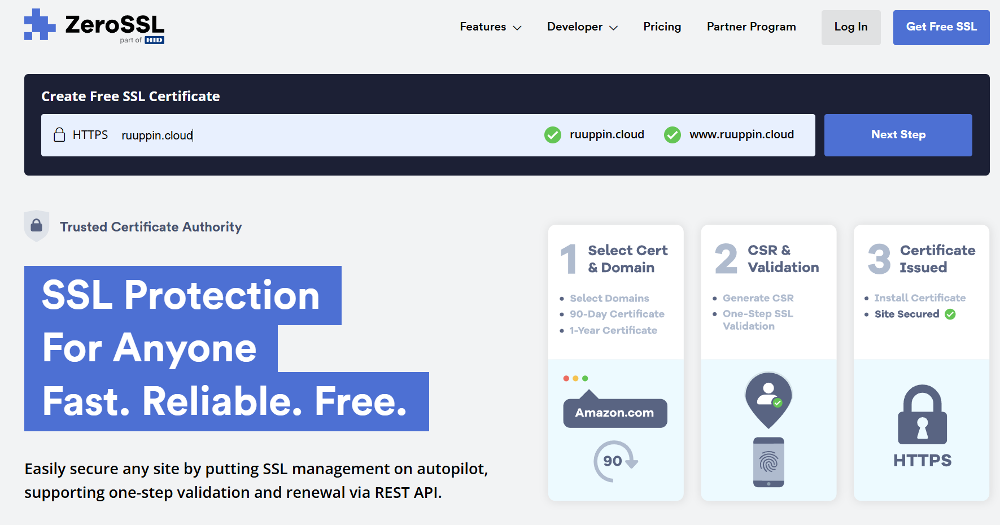
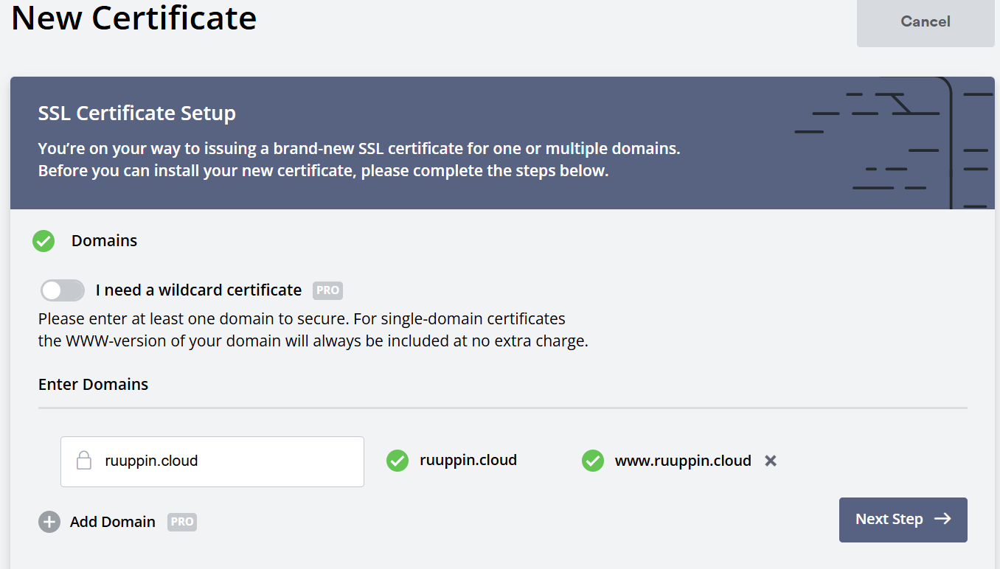
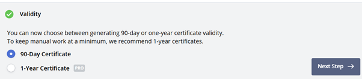
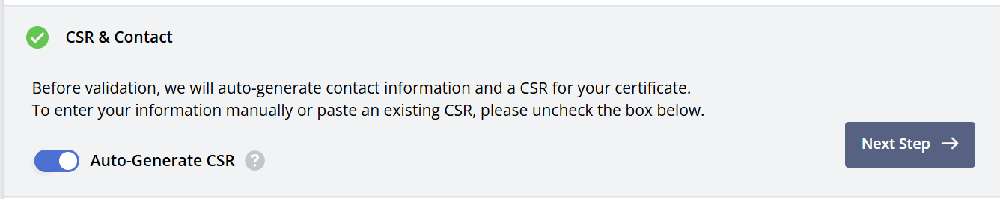
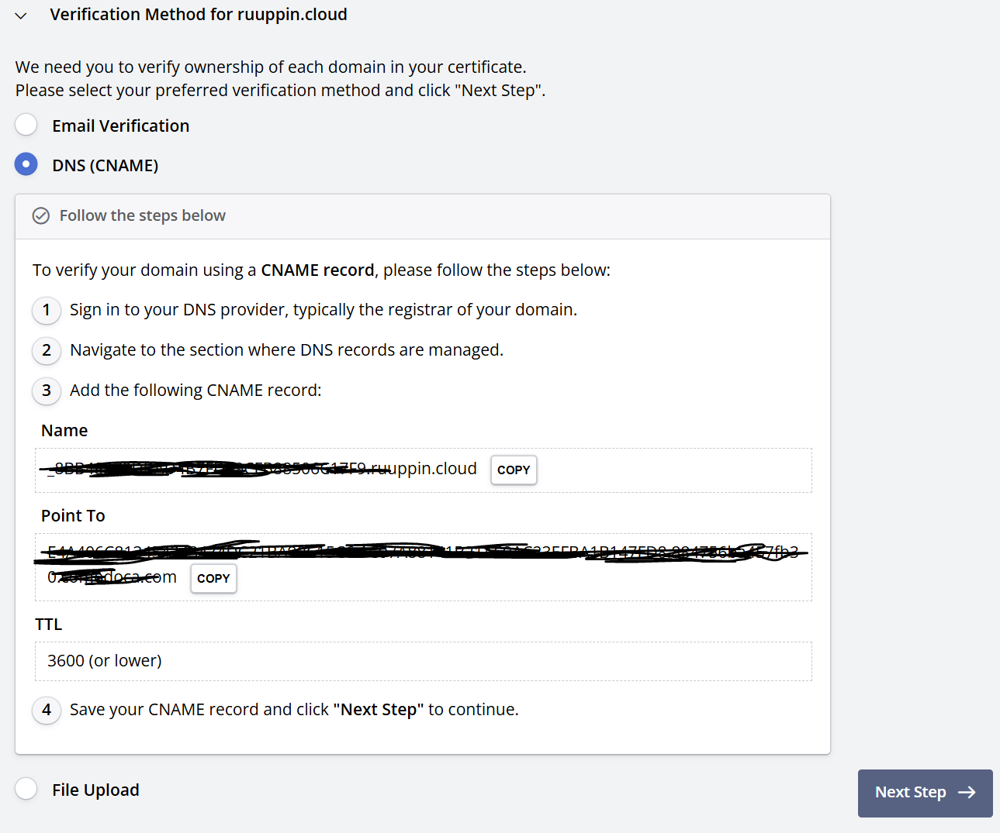
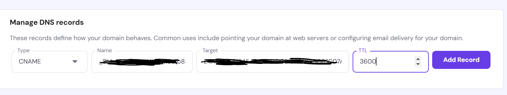
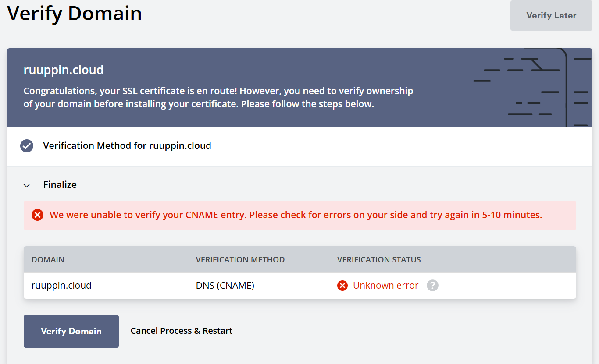

Website update: Added SSL certificate to my website
Finally, I found the motivation to update my website. It has been bothering me for a long time that when I visit my site, the browser warns about an unsecured connection. I had previously done a bit of Googling and got the impression that if you want a secure connection, you have to pay for an SSL certificate. My friend told me that there are also free certificates available on the internet, so I did some more searching. I came across a site called (https://app.zerossl.com/dashboardand) after a bit of tinkering, I got a certificate from there. The free certificate is valid for a total of 90 days, so it needs to be updated fairly often. If others are interested in a free SSL certificate and/or validating one for their internet service, here’s how it can be done through the zerossl site:
1. Go to zerossl.com.Add your domain to the search field and click next step:

2. Next, the site will ask you to create an account. Create an account and click next step.

3. Then, enter your domain in the text field and click next step.
4. Next, select the certificate validity period. Since it’s the free version, select 90 days.

5. You can't choose add-ons in the free version, so leave it empty.

6. Enable the toggle:

7. Choose the free plan (this is only possible if you didn't select any options included in a paid plan).
8. Lastly, you need to verify the domain to ensure you own it. I used DNS (CNAME) verification as it’s the easiest.

9. Next, go to your own DNS hosting provider and add the CNAME record according to the instructions in the image above.

10. Finally, verify the domain. This can take anywhere from one minute to 48 hours depending on the provider.

11. Once the domain is verified, you can download the certificate file. The certificate needs to be added to your web host's SSL certificate section. My website runs on GitHub Pages, which automatically fetches the certificate from my DNS host and updates it. It took about five hours for it to start working.
I hope someone finds my guide useful someday.🙂